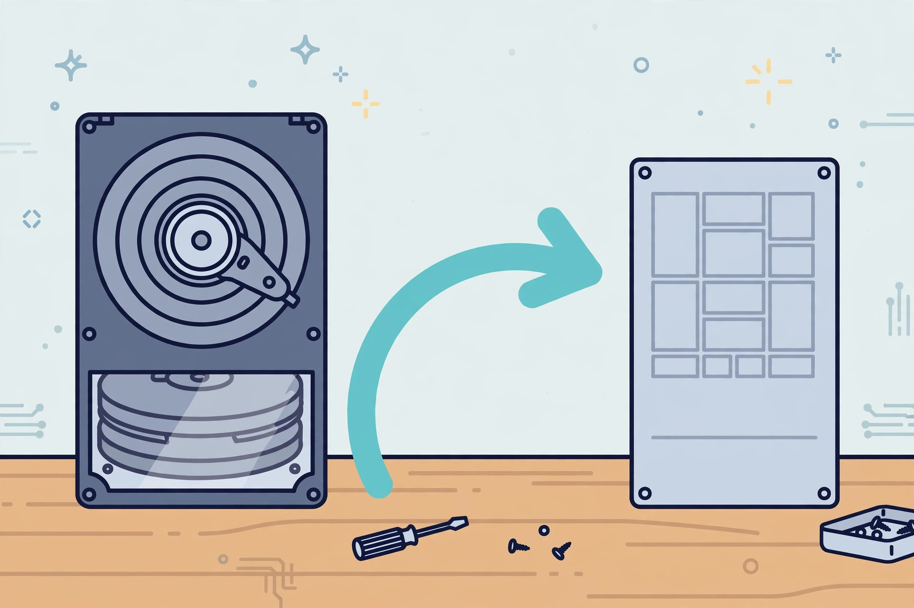

Clone your hard drive to an SSD without losing your weekend

Moving from a spinning hard drive to an SSD is the single biggest speed upgrade most older PCs can get — faster boots, faster everything, lower power draw and better stability (PCWorld). The question is how to move your system over. Every guide assumes the answer is cloning, but cloning isn't always the right call. So this guide starts with the decision, then gives you a pre-flight checklist, a tool-agnostic cloning procedure, and the post-clone boot check — including what to do when Windows refuses to boot from the new drive.
Clone or clean install? Decide first
| Clone the drive when | Clean-install Windows when |
|---|---|
| Windows runs well and you just want speed | The system is a mess of old software, errors or malware |
| You have lots of programs you'd rather not reinstall | You suspect file-system corruption or bad sectors (fix those before cloning — a clone copies problems too) |
| The SSD is big enough for everything on the drive | You're moving to a smaller SSD and would have to ruthlessly delete first |
| You want it done in an afternoon | You want a fresh start and have your files backed up elsewhere |
Cloning keeps all your OS settings and installed programs with no reinstall (PCWorld) — but it also keeps every problem. If the old system is unhealthy, a clean install is the better weekend.
The pre-flight checklist
- Back up. A full backup of anything you can't replace (see the 3-2-1 backup rule). Cloning shouldn't touch the source drive, but "shouldn't" is not a backup strategy.
- Do the sizing math. Check how much space is actually used on the source drive (This PC → right-click → Properties), not its total capacity. The used space must fit on the SSD — cloning tools will refuse or fail otherwise, and one common gotcha is picking a destination partition with insufficient capacity (PCWorld).
- Check the old drive's health. Run a quick SMART check and a read-only scan first. If there are errors or bad sectors, fix those issues before attempting to clone (UMA Technology).
- Connect the SSD via an internal slot (desktop) or a USB-to-SATA/NVMe adapter (laptop). If it doesn't show up in Windows, open Disk Management and initialize it.
- Pick a cloning tool. Any reputable disk-cloning tool works — the steps below are the same across them. Well-known free options include EaseUS Partition Master (free cloning feature, per EaseUS) and Macrium Reflect.
The cloning procedure
- Install and launch your cloning tool, and find its Disk Clone (or "Clone this disk" / "OS Migration") option (PCWorld; UMA Technology).
- Select the source: the old hard drive.
- Select the destination: the new SSD. Read the warning carefully — everything on the destination will be erased (EaseUS).
- Choose the layout mode: "autofit" / "fit to disk" if the SSD is a different size than the source — it resizes partitions automatically (EaseUS). If the tool leaves empty "free" space on the target, expand the partition to fill it (DeltiasGaming).
- Start the clone. It can take minutes to over an hour depending on how much data is moving. Leave the PC alone while it works.
- Verify the clone: the tool should show all source partitions present on the SSD — including small system and recovery partitions. Missing partitions are a classic cause of boot failures afterward (one user's clone skipped the recovery partition and the new drive wouldn't boot — EaseUS forums).
Making it boot
- Shut down. If your PC holds one drive, physically swap the SSD in; otherwise leave both connected.
- Power on and enter the BIOS/UEFI setup (F2, F8, F11 or Del, depending on the PC — PCWorld).
- Go to the Boot tab and move the new SSD to the first boot position. Save (usually F10) and restart (EaseUS).
- Windows should boot from the SSD exactly as before — same programs, same files, no reinstall (PCWorld).
When it won't boot
- Recheck the boot order — the BIOS may have silently reverted to the old drive.
- Check that all partitions cloned. Boot from the old drive (or recovery media) and compare partition counts; a missing EFI or recovery partition is the usual suspect.
- SSD not detected at all? Reseat the connection, try a different SATA port or adapter, and confirm the BIOS sees the drive before blaming the clone.
What success looks like
The PC boots from the SSD, everything works as before, and Disk Management shows the SSD with its full capacity available (extend the main partition if there's leftover unallocated space). Keep at least 10–20% of the SSD free for best performance (UMA Technology). And the golden rule: don't format or wipe the old drive until the SSD has booted successfully — then the old HDD makes an excellent backup drive (DeltiasGaming).